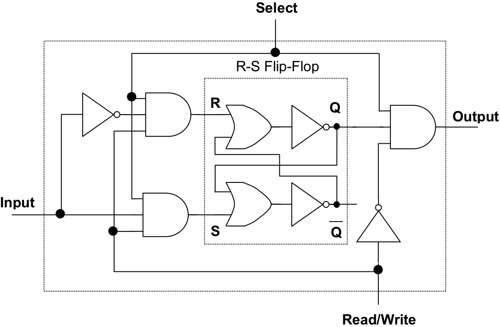
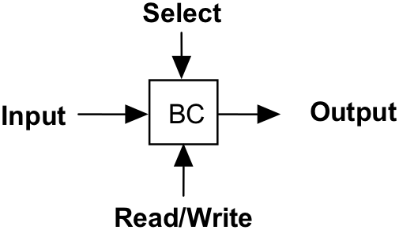
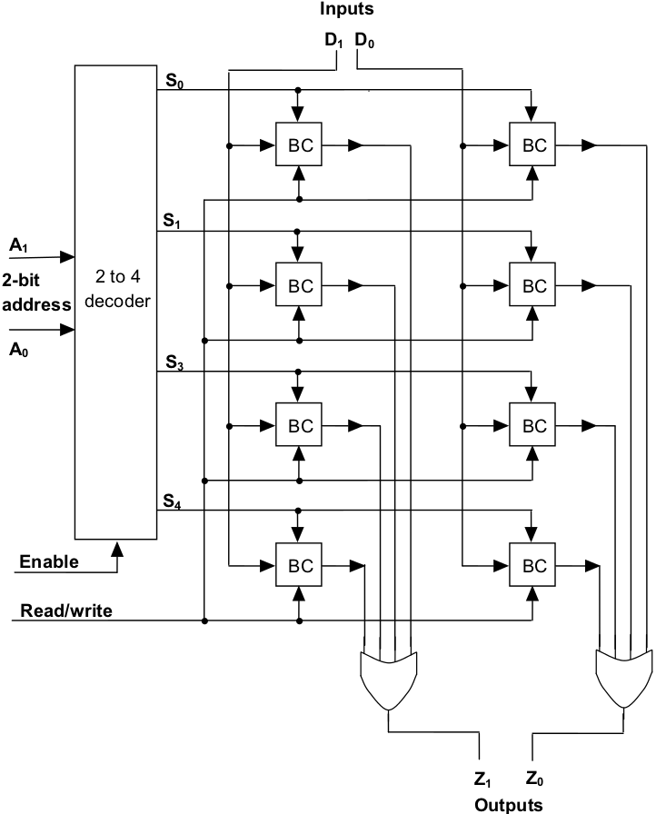

In we talked about how a sequential device as simple as an R-S flip-flop could be used to remember one bit of data. We now develop a complete memory cell, called a binary cell, based on the flip-flop. When such a cell is selected and in “read” mode, the current value of its underlying flip-flop will be transferred to the cell’s output line. When the cell is selected and in “write” mode, an input data signal will determine the value remembered by the flip-flop. A complete circuit is shown in .
The fundamental design of this binary cell is based on the R-S flip-flop of though there are some significant differences. To begin with, the cell has three inputs and a single output. The inputs are labeled “Select”, “Read/write”, and “Input”. The output line is labeled “Output”.
A Binary cell (BC) for RAM memory
The “select” input is used to access the cell, either for reading or writing. When the select line is high, “1”, then a memory operation can be performed on this cell. When the select line of the binary cell is low, “0”, then the contents of the cell are not currently of interest – i.e., at the present time the cell is not being read from or written to. We can see how “select” is given this power by noting that both the inputs and the output of the underlying R-S flip-flop are routed through and gates and that “select” is one of the inputs to each of these gates. Thus, if “select” is low, the inputs to the R-S flip-flop will stay low (meaning that its stored value will not change) and the output produced by the cell will be low (regardless of whether the actual bit held in the flip-flop is “0” or “1”).
The next input we’ll examine is “Read/write”. A system clock will drive this input. As was the case with the clocked R-S flip-flop of , a low, “0”, will signify “read” while a high, “1”, will signify “write”. During the read phase it will not be possible to write to the cell. Likewise, during the write phase it will not be possible to read the contents of the cell.
Assume the cell has been selected (i.e., “select” is high signifying that a memory access operation is to be performed on this cell.) Furthermore, assume that the clock value on the “Read/write” line is low (forcing the “negated Read/write” to high) indicating the cell contents are to be read. In this case, the value output by the cell will depend solely on the Q value of the flip-flop. If Q is low, the cell outputs a “0”, if Q is high, the cell outputs a “1”. This is because the and gate attached to the cell’s output line has three inputs: “select”, “negated Read/write”, and Q; and both “select” and “negated Read/write” are currently high.
As mentioned earlier, when the cell is being read its contents cannot be modified. The reason for this is that the same low value on the “Read/write” line that allows the cell to be read, is fed into the and gates guarding the inputs to the flip-flop. Thus during reads, the inputs to R and S are guaranteed to be low preventing the value of the flip-flop from being modified.
When the cell is selected and the “Read/write” line is set to high, signifying a “write” operation, the value placed into the cell will depend solely on the state of the “Input” line.
The reason for this is that the and gates that guard the R and S inputs of the flip-flop will both have two of their inputs set high: the “select” and “Read/write” inputs. Thus, if “Input” is high, S (set) will receive a high and the flip-flop will store a “1”. If, on the other hand, “Input” is low, then R (reset) which receives a negated version of “Input” will go high and the flip-flop will reset to “0”. Note that having a negated version of the input line run into R is a clever idea, since it prevents the R-S flip-flop from ever entering into its invalid state. (Recall from our discussion of R-S flip-flops in that if R and S are ever set to “1” at the same time the flip-flop enters a stable, but invalid state.)
A Binary Cell – encapsulated view
It is worth mentioning that during write operations, reading is prohibited. This is easy to see, since the and gate guarding the “Output” line receives one of its inputs from “negated Read/write” which is held low during write operations. Hence, output from the cell will always be low, “0”, during writes, regardless of the actual value on the Q line.
contains an encapsulated view of a single binary cell. An entire random access memory (RAM) can be constructed from a large collection of binary cells, together with some address decoding circuitry. The Watson Virtual Machine includes a memory of 256 words, each 16 bits wide – much too large to be conveniently illustrated. [4] In order to have a manageable circuit diagram, presents an implementation of a 4 x 2 RAM. Such a RAM module has four separate “words” of memory, each two bits wide.
A word of storage will consist of two binary cells arranged in such a way that both bits can be accessed simultaneously. Because the memory consists of four of these words, a total of eight binary cells will be used. These cells will be laid out according to a four row by two column grid pattern, where each row of the grid represents one word.
Examining the inputs to the memory unit, we see that there are two input data lines at the top of the diagram (D1 and D0 ), representing the two bits of the number to be written. One of these bits will be the high-order data bit and one the low. The signal from the high-order data input line is fed to the high-order bit of every word. Likewise, the low-order data input signal is fed to the low-order bit of every word.
On the left side of the circuit diagram, a two-bit address (A1 and A0 ) is input. This address is fed into a two-to-four decoder that generates a high signal down the data line corresponding to the word of memory to be accessed (either read or written). The decoder also accepts an “enable” input. This input essentially tells the decoder whether the bit pattern currently on the input address lines is a valid memory address that is to be decoded, or whether the circuit should just ignore this bit pattern for the moment.
A 4 x 2 RAM memory
The final input is the clock signal that the memory unit receives via the read/write line. Note that this signal is propagated to every binary cell in the entire RAM, allowing the memory unit to either read from or write to any of the binary cells.
Two output lines are visible at the bottom of the circuit (Z1 and Z0 ); one for the high-order bit of the number to be output, one for the low-order bit. As you can see, the output lines from each of the four binary cells making up a column are fed into a multi-input or gate that is tied to the output line for that column. So, if any of the binary cells in a column produces a “1”, then that column’s output line will produce a “1” as well. Due to the presence of the address decoder, however, we can be sure that only one row, and thus only one bit per column, can be accessed (either read or written) at any point in time.
We now come to the close of our discussion concerning the implementation of main memory, and thus to the end of this book’s material on computer “hardware”. As I am sure you can appreciate, we have just scratched the surface of this fascinating field. However, my hope is that this brief introduction to digital logic has convinced you that computers can be completely understood in terms of large networks of very simple logic gates that are interconnected in complex patterns.
Exercises for
Draw the decoder circuit required in . All output lines should be low, “0”, when the “enable” line is low. When “enable” is high this decoder functions like the normal 2-to-4 decoders discussed in .
Assume that the circuit in is built using only two-inputandgates, two-inputorgates, and single-input not gates. In other words, each four-input or gate shown at the bottom would require 3 two-input or gates to implement. Calculate the number of gates of each type required to fully implement this 4 x 2 RAM.
is a simplified circuit that uses only eight binary cells (BCs). How many BCs will be required to construct the RAM of the Watson Virtual Machine, which has 256 words of memory each 16 bits wide?